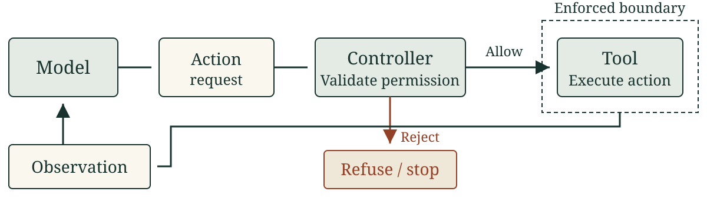
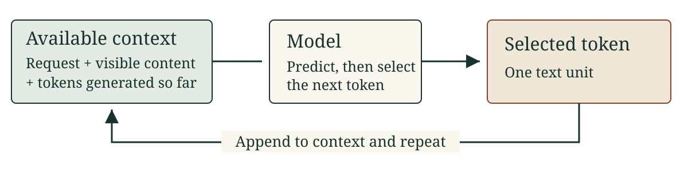

Coding models, agents
and verification
Week 1 · Agentic Software Engineering
How does an agent produce a change,
and what would justify accepting it?
LO1: explain the mechanism · LO5: derive a counterexample · LO9: compare a prediction with evidence
One product, increasingly demanding decisions
A developer uses our CI dashboard to find builds that need attention. CI runs automated checks when code changes.
Evaluate it in use → respond to a model audit you verify
You will maintain your own repository through the course.
By the end, explain a decision
How did the model get the information it used?
Which action actually ran, and what did it establish?
Which input could disprove the proposed repair?
We will change the case and ask you to reason again.
A successful build appears as unknown
" OK "Dashboard:
unknown
Before editing: what is the status supposed to mean?
Course-authored dashboard case. Later, we will check the failure count too.
Start from the status contract
For strings: ignore surrounding whitespace and ASCII letter case.
Map ok to passed, fail to failed, everything else to unknown.
def status_label(raw):
labels = {"ok": "passed", "fail": "failed"}
return labels.get(raw.lower(), "unknown")
The existing checks use "ok" and "fail". Both pass.
Non-string inputs are outside this contract.
Choose a test that changes the decision
Write one input, its expected output, and the contract rule.
Your case must fail for this candidate.
Would an unfamiliar word such as "cancelled" expose the omission?
Commit to your prediction before the repair is revealed.
Repair the rule, then retain the checks
- return labels.get(raw.lower(), "unknown")
+ return labels.get(raw.strip().lower(), "unknown")
| Input | Required | Before | After |
|---|---|---|---|
" OK " |
passed | unknown | passed |
"\tfAiL\n" |
failed | unknown | failed |
Keep the ordinary, unknown and empty-input regressions too.
Scripted six-case demo: expected 4/6 → 6/6, zero model calls.
Who does what during a repair?
Model: requests read("contract.md")
Controller: permits this read
Tool: returns the file's bytes
Model: proposes a patch using those bytes
The model proposes; the controller decides permission; the tool performs the allowed operation.
A file read supplies information. A patch still needs a completed check.
Schematic event sequence, not a recorded session.
An agent connects generation to an environment

The controller also enforces limits and decides when execution stops.
Week 2 makes this loop explicit in a small implementation.
Where is the test result?
I updated the function and all tests pass.
The record contains a file write, followed by that message.
Name the missing observation and one useful next action.
30 seconds alone, then compare explanations.
Generation uses the available context

A token can be a word fragment, punctuation or part of a program.
A generated algorithm still needs to be executed to observe its behavior.
Reading a file supplies context
Reading a contract → changes the current input
A file on disk contributes no content until the workflow supplies it.
Missing rules and stale test results can change the next proposal.
Where does the learned ability come from?
Pretraining: learn patterns from text and code.
Supervised fine-tuning: learn from examples of desired responses.
Reinforcement learning: adjust behavior using reward or feedback.
These change learned parameters. Reading today's contract supplies current context; it does not retrain the model.
High-level background. No training implementation or ML prerequisite.
The function is only one part of the task
The developer also needs the dashboard's failed-build count.
sample.json → dashboard.py → visible rows + summary
↓
labels.py
A correct label does not guarantee a correct summary.
Repository walkthrough: a hand trace, not a recorded agent run.
Define what the repository change must preserve
For build records with string statuses:
- Normalize labels according to the status contract.
- Count the rows whose label is
failed. - Keep every build ID in its original order.
Which files would you inspect before proposing an edit?
Use the walkthrough's sample, contract, implementation and existing checks.
Read the caller as well as the helper
From dashboard.py:
rows = []
for b in builds:
label = status_label(b["status"])
rows.append({"id": b["id"], "label": label})
failed = sum(b["status"] == "fail" for b in builds)
The label and the count interpret the same status differently.
What happens when the raw status is "\tfAiL\n"?
Delegate a bounded investigation
Read the contract, sample, helper, caller and checks. Explain where labels and counts can disagree. Propose the smallest repair and regression checks. Preserve all build IDs and their order.
An agent can gather context and carry observations into its next step. The engineer still decides whether the proposed checks cover the request.
Teaching prompt, not run. Next: two frozen recorded attempts that used a shorter prompt.
A helper-only repair leaves a contradiction
Hand trace after adding strip().lower() in labels.py:
Build 17: "\tfAiL\n" → label failed
Build 18: "ok" → label passed
Build 19: "cancelled"→ label unknown
Summary: failed = 0 Required: 1
Which check would the helper's six tests miss?
Hand trace; the repository tests were not run.
Make the summary use the same decision
In dashboard.py:
- failed = sum(b["status"] == "fail" for b in builds)
+ failed = sum(row["label"] == "failed" for row in rows)
The helper normalizes a status once. The count uses that label.
Check the complete dashboard result, including all IDs in order.
Authored repair, not a model output.
What would justify accepting this change?
labels: failed, passed, unknown
failed: 1
IDs: 17, 18, 19 (same order, none removed)
These are the expected results for the sample, not an observed pass.
An actual decision also needs completed checks on the current files, retained regressions and a review of the changed scope.
Compare your own prediction with one attempt
20 minutes. Use the existing P1 calibration record.
Save a time estimate and binary pass prediction for task 001. After the task is revealed, derive a check, generate once and verify.
Inspect the result with a peer. Revise one claim independently.
Activity steps include timing, commands and text participation.
Explain the behavior you can support
I predicted . The requirement says . For input , I expected ___ and observed . That supports ___, but leaves ___ unchecked.
If execution did not complete, name the missing observation.
A correct first candidate can still teach you something about your prediction.
A nearby task changes the constraint
001 Signed sum: negative values and empty input.
002 Stable unique strings: first-occurrence order and case.
003 Inclusive clamp: behavior at both endpoints.
005 Whitespace and word order: separators and sequence.
The workshop completes these four attempts. The rest are optional practice.
Compute the error before explaining it
Two invented reporting rows:
Time prediction → record Pass prediction → record
Attempt A 5 → 7 min yes → yes
Attempt B 5 → 7 min yes → no
Mean signed time error: +2 minutes. Binary pass-prediction error: 1 mismatch out of 2.
Invented rows; arithmetic only.
Keep a missing outcome visible
Completed coverage: 3 of the 4 required first attempts.
A later repair does not replace the original failure.
A model error, an execution failure and time spent waiting need different explanations.
A correct count, but where did the builds go?
A new patch filters the rows to keep only failed builds.
The count is now correct. Its only check asserts failed == 1.
Accept or revise? Write a distinguishing expected result.
Use the original contract. Answer independently before comparing with a peer.
A new service sends completed
The current rule maps unknown strings to unknown.
The new request does not say whether completed means success.
What can you test now? What must you learn before changing the mapping?
A representation change and a new product meaning need different evidence.
Exit question
The model reads a contract and writes a patch. The controller denies its test request. The model then says “all tests passed.”
Explain what happened, what is unknown, and one permitted next action.
Answer without AI. Identify the responsible components.
What a production harness adds
The same loop, with more around it:
| Added around the loop | Week |
|---|---|
| Tool definitions, argument checks, budgets, stop rules | 2 |
| A compacted record of earlier steps | 2 |
| Repository context selection, context files, skills, tool servers | 3 |
| Hooks and a sandbox around tool effects | 3 |
| A specification and a staged plan with checkpoints | 4 |
Each layer changes what the model sees or may do. None checks the result for you.
Next: build the loop you can now explain
Week 2: implement the small controller and inspect its observations and stopping.
P1 continues with the same four calibration attempts and adds five controller tasks. It reuses your work, verification, explanation and revision.